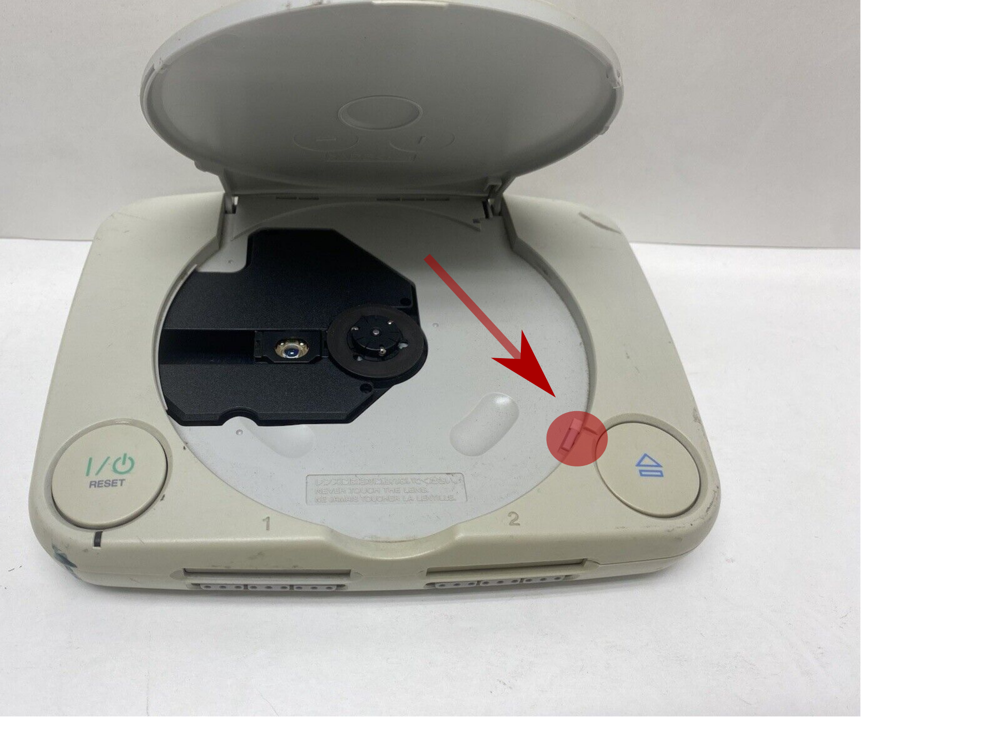
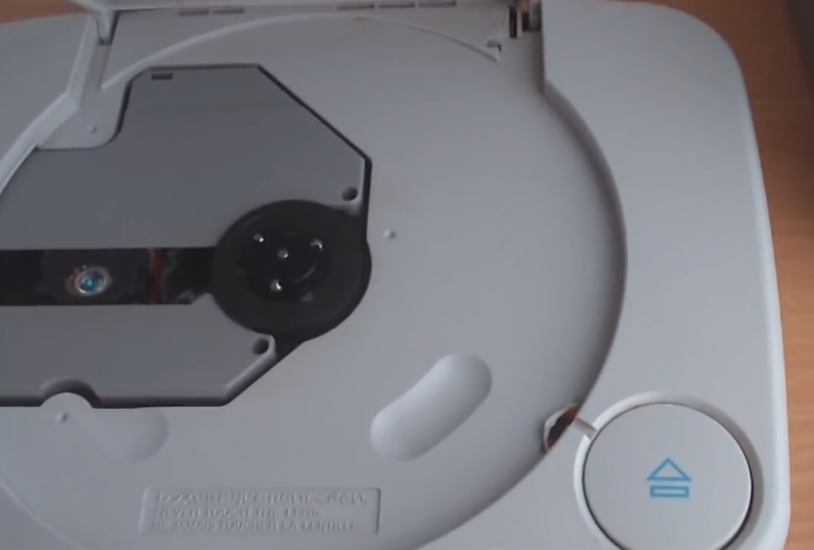
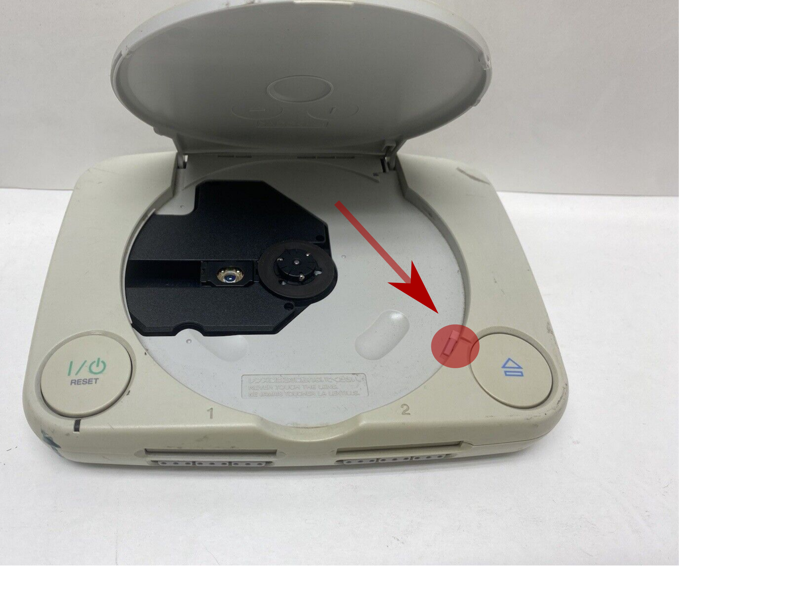
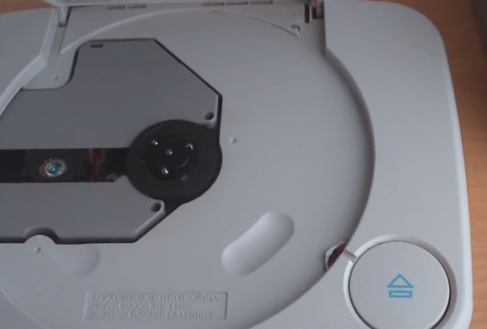

2 new ways to properly boot unlicensed discs on PS1 consoles using only CD-Rs and real PS1 game discs!
| DemoSwap Patch (For late SCPH-3000, late SCPH-1001, late SCPH-1002, and all newer consoles) | TOCPerfect Patch (For SCPH-1000, early SCPH-3000, early SCPH-1001, and early SCPH-1002 consoles) |
|---|---|
|
The DemoSwap Patch enables a new DemoSwap Trick method that is compatible with every PS1 console. It involves removing a moving disc only once and then swapping when the motor is stopped. The goal of the DemoSwap Trick is to provide a temporary method to install/access something like the Tonyhax International ROM Flasher CD, MCTool, Unirom, or similar. Although it is not meant to be anything more then a temporary solution/entry point, the DemoSwap Trick still enables all the same improvements and enhancements found by TOCPerfect patching a CD image. |
The TOCPerfect Patch enhances booting a CD-R with the CD Player Swap Trick found in early-manufactured PS1 consoles. The CD Player Swap Trick is the only swap trick which involves swapping while the CD drive motor is off/stopped. There is no hot-swapping while the CD/motor is spinning. In combination with a TOCPerfect Patched CD-R, the CD Player Swap Trick is arguably the best method to boot CD-R backups for the PS1 consoles that support it. |
| DemoSwap Patch | TOCPerfect Patch |
|---|---|
|
|
New in version 1.0.4:
SYSTEM.CNF (to SYSTEM.CN2) and inserts tonyhax.exe (which is named PSX.EXE in the disc image after patching) instead of editing the contents of the file SYSTEM.CNF and inserting tonyhax.exe.New in version 1.0.3:
The first release of PS1 DemoSwap Patcher by MottZilla.
The first and only release of the original, TOCPerfect standalone Patcher. This program is what originally gave MottZilla the idea to create PS1 DemoSwap Patcher using a new method of accomplishing the goals of the original TOCPerfect v1.0.
Both TOCPerfect and DemoSwap methods require you to block the lid sensor of the PS1 console to trick it into thinking that the CD Drive lid is closed at some point in the process of using these patches. The lid sensor is highlighted by the red circle and arrow in the images below. On the original grey fat PS1 consoles (SCPH-1000 to SCPH-900X) the lid sensor is located in the top right corner, it is is shaped like a circle. Ideally you press it down with a bent pen spring as shown. You can also use a bent QTIP, scrap of paper, aluminum foil, or even tape cut to size. On the slim PSone consoles (SCPH-100 to SCPH-102) it is in the lower right corner to the side of the edge of the CD drive. For these consoles it is best to use a piece of tape or paper to slide in and press it down as shown.


The idea of the TOCPerfect patch is this:
All SCPH-1000 consoles (the original Japanese console model) are compatible. These consoles are either System BIOS v1.0J and CDROM Controller VC0A (example serial number A5532655) or System BIOS v1.0J and CDROM Controller VC0B (example serial number A6145548). Note that no date of manufacture is available on Japanese consoles.
Early SCPH-3000 consoles (the second Japanese console model) are compatible. Compatible consoles have System BIOS v1.1J and CDROM Controller VC0B (example serial number: A6956171. Incompatible consoles have System BIOS v2.1J and CDROM Controller VC1B (example serial number: A7543968).
Early SCPH-1001 consoles (the original American console model) are compatible. These consoles have a serial number lower then U592XXXX (where X can be any number) according to the original Swap Trick Guide from 1996. These consoles are either System BIOS v2.0A and CDROM Controller VC1A (example serial number: U5361469, July 1995 manufacture date) or System BIOS v2.1A and CDROM Controller VC1A (example serial number: U5860989, October 1995 manufacture date).
Early SCPH-1002 consoles (the original European console model) are compatible. No serial number based info is available for this console model at this time. There also appears to be no date of manufacture available (like Japanese consoles), so it is truly a roll of the dice if a specific SCPH-1002 console has the CD Player Swap Trick or not.
You want to TOCPerfect patch the first data track of the game rip you want to use. The first data track will be named something like "track 01.bin" in your game rip directory.
On Windows a basic GUI is supported. You can use the CLI on Windows as well, but the GUI may be easier for many users.
TOCPerfect Stealth patch (no debug output before game boots) example:
"PS1 DemoSwap Patcher.exe" -ts "track 01.bin"
Regular TOCPerfect patch (shows debug output before booting the game) example:
"PS1 DemoSwap Patcher.exe" -t "track 01.bin"
TOCPerfect Stealth patch (no debug output before game boots) example:
./ps1demoswap -ts "track 01.bin"
Regular TOCPerfect patch (shows debug output before booting the game) example:
./ps1demoswap -t "track 01.bin"
Burn the ".cue" file in your game rip directory to a blank CD-R after applying the TOCPerfect patch.
This is an exploit only available on early (very old, among the first manufactured) PlayStation consoles, it is the only swap trick that does not involve swapping a moving disc making it the best swap trick ever available. It was first described in the original Swap Trick Guide from 1996, and in short this is how to use it on compatible PlayStation consoles:
| Boot Method | Region Locked? | CDDA/CD Audio Playback? | Multi-Disc Games (Parasite Eve, Fear Effect, etc.)? | Anti-Piracy Detection Triggered? |
|---|---|---|---|---|
| CD Player Swap Trick | The SCPH-3000 has a region lock so even with the CD Player Swap Trick it refuses to boot any discs without the Japanese license data. The SCPH-1000, SCPH-1001, and SCPH-1002 do not have any region locks and do not have this problem. | The TOC is not updated from the original PS1 disc used in the CD Player Swap Trick. This causes CD audio to not play at all in some games. | An additional swap trick known as the Mid-Game Hot Swap Trick may be required to complete such games. | Most anti-piracy detention (such as in Dino Crisis) is partly checking for Swap Tricks by comparing the TOC of the current CD with the one expected to be read from a real Dino Crisis disc during proper booting. This can cause the anti-piracy check to trigger and prevent playing the CD-R with the CD Player Swap Trick. |
| CD Player Swap Trick+TOCPerfect Patched CD-R | Any TOCPerfect Patched CD-R boots on any console with the CD Player Swap Trick, including the SCPH-3000. | The TOC is updated before the main game executable is loaded ensuring correct playback of CD audio in games that contain it. |
All American and European PS1 consoles can play through games that span multiple discs like normal. You can open/close the CD drive lid to switch from i.e. Disc 1 to Disc 2 without any issues due to TOCPerfect unlocking the CD drive of these consoles. The Japanese PS1 consoles can not be unlocked however and may still require an additional swap trick known as the Mid-Game Hot Swap Trick to complete such games. |
On stock SCPH-1000 and SCPH-3000 consoles anti-piracy detection is completely bypassed when using a TOCPerfect Patched CD-R. If your SCPH-1000 or SCPH-3000 has a non-stealth modchip, or if you are using an American or European PS1 console anti-piracy is currently bypassed for most (but not all) games. |
If you are playing through a game which spans multiple discs (i.e. Fear Effect has 4 discs) on a Japanese PS1 console you have to perform another swap trick when changing from i.e. Disc 1 to Disc 2 in the game. It is therefore not recommend to play through such games on Japanese PS1 consoles. American and European consoles have the CD drive unlocked when a TOCPerfect Patched CD-R is booted so they do not have any issues playing through these games that span multiple discs.
If you do not mind doing a single hot swap trick each time you need to swap discs in the game you can however complete these games just fine with only a Japanese PS1 console. This method is described below as the Mid-Game Hot-Swap Trick:
Certain PAL region games contain additional copy protection known as LibCrypt. If you want to play such a game on a SCPH-1000 or SCPH-3000 you must patch out the LibCrypt protection in addition to TOCPerfect Patching the game as the hardware of these consoles are incapable of supporting the copy protection routines required.
On all newer consoles as long as you burn a LibCrypt protected PAL region game correctly it should work.
Enables you to patch a rip of one of the commonly found psx game demo discs supported by PS1 DemoSwap Patcher that you own an authentic copy of to boot a special Tonyhax when doing a simple disc swap from the original authentic PSX game demo disc to the patched backup CD-R of the same PSX game demo disc. This special simple disc swap trick does not require any tricky timing, and best of all works on all PSX consoles.
If you have a USA/PAL console, you can then use MottZilla's MCTOOL to install TonyHax onto a memory card using the FreePSXBoot exploit for future convience.
Check the DiscLib.txt for the title of the demo disc you have or will obtain. As of this writing all Interactive CD Sampler Volumes 1 through 11 are supported. More demos can be added, details below.
Create a raw ISO image of your demo disc using a tool like ISOBuster.
On Windows a basic GUI is supported. You can use the CLI on Windows as well, but the GUI may be easier for many users.
"PS1 DemoSwap Patcher.exe" -d "track 01.bin"
./ps1demoswap -d "track 01.bin"
When you remove the original PS1 demo disc you do not need to rush to replace it with the DemoSwap Patched CD-R. When removing the disc the motor and laser will try to read the disc you have removed for a few seconds before giving up. After that you can easily place the CD-R into the console. When you take your next action the CD-R should begin spinning and reading. However if you removed the disc at a time when data was being read the system may lock up. Read the notes below to know when you should be removing the original disc and swapping in the CD-R.
| PS1 Demo Disc | PS1 Demo Disc Region | Instructions |
|---|---|---|
| DemoDemo PlayStation Vol. 22 | NTSC-J | Select "Mighty Hits" demo. While on the screen with Start and controls, swap discs. Then start the demo. |
| Namco Museum Vol. 1 | NTSC-U | In the menu press start and go to the games section. Swap discs on the games menu. Select "PACMAN" and start the game. |
| Namco Museum Vol. 2 | NTSC-U | In the menu press start and go to the games section. Swap discs on the games menu. Select "XEVIOUS" and start the game. |
| Namco Museum Vol. 3 | NTSC-U | In the menu press start and go to the games section. Swap discs on the games menu. Select "DIGDUG" and start the game. |
| Namco Museum Vol. 4 | NTSC-U | In the menu press start and go to the games section. Swap discs on the games menu. Select "ASSAULT" and start the game. |
| Interactive CD Sampler Vol. 1 | NTSC-U | Select "Loaded" demo. While on the screen with Start and Help, swap discs, then start the demo. |
| Interactive CD Sampler Vol. 2 | NTSC-U | Load Demo "Need For Speed". On "game mode" menu swap discs. Press Select to exit to main menu. |
| Interactive CD Sampler Vol. 3 & Vol. 3.5 | NTSC-U | Load Crash Bandicoot demo. When you control Crash, swap discs. Then Press Select to return to main menu. Load 2Xtreme demo. |
| Interactive CD Sampler Vol. 4 | NTSC-U | Start Croc demo. Once controlling Croc swap discs. Press Select to exit. Start Parappa demo. |
| Interactive CD Sampler Vol. 5 | NTSC-U | Start Crash 2 demo. Once you control Crash, swap discs. Press select to return to menu. Start Parappa demo. |
| Interactive CD Sampler Vol. 6 | NTSC-U | Start Crash 2 demo. Once you control Crash, swap discs. Press select to return to menu. Start Bloody Roar. |
| Interactive CD Sampler Vol. 7 | NTSC-U | Select Blasto demo. On instruction screen swap discs, then start demo. |
| Interactive CD Sampler Vol. 8 | NTSC-U | Select Spyro demo. On instruction screen swap discs, then start demo. |
| Interactive CD Sampler Vol. 9 | NTSC-U | Select Crash 3 demo. On instruction screen swap discs, then start demo. |
| Interactive CD Sampler Vol. 10 | NTSC-U | Select Contender demo. On instruction screen swap discs, then start demo. |
| Interactive CD Sampler Vol. 11 | NTSC-U | Select Ape Escape demo. On instruction screen swap discs, then start demo. |
| PSOne Wherever, Whenever, Forever | NTSC-U | Select Atlantis demo. On instruction screen swap discs, then start demo. |
Once the Tonyhax International loader is booted via the DemoSwap method, the patched PS1 game demo disc backup CD-R will stop the motor of the PS1 CD drive. If you see the text Put in a backup/import disc, then press X remove the patched PS1 game demo disc backup CD-R from your PS1 console's CD drive. Put in the backup CD-R or import PSX game disc you want to play without unblocking the lid sensor. Once you press X, the console will run some commands automatically, followed by the game booting with perfect CD audio playback. Note that you can not unblock the lid sensor while playing the game on Japanese consoles, if you do so the game will stop working.
You can add support for an unsupported PS1 demos disc by editing the DiscLib.txt file (found in the same directory as the PS1 DemoSwap Patcher executable) to include information on how to patch the CD image of the (currently) unsupported PS1 demos disc. Follow the steps below to add manual support for your PS1 demos disc:
SYSTEM.CNF file in the CD image. Find the main executable of the PS1 demos disc on the BOOT=cdrom:\ line, i.e the line in SYSTEM.CNF could be BOOT=cdrom:\main.exe;1 which would mean the main executable of the PS1 demos disc would be main.exe in this case..EXE file that you find in the CD image. Through trial and error or clues in the .EXE filename you can figure out what game demo correlates to what executable file.DiscLib.txt file with a text editor of your choice. The format is simple, each individual PS1 demo disc takes up 3 lines in the file. The first line is the name of the PS1 demo disc. The second line is the main executable, and the third line is the target demo executable. You should prepend this information to the beginning of the file. The import thing to keep DiscLib.TXT readable by PS1 DemoSwap Patcher is to not remove the last 3 lines of the file containing 3 dots (...).Socram8888 is the original developer of the Tonyhax loader, which is the base that the heavily modifed special Tonyhax loader now known as Tonyhax International used by PS1 DemoSwap Patcher. The original Tonyhax loader credits are below, in alphabetical order: